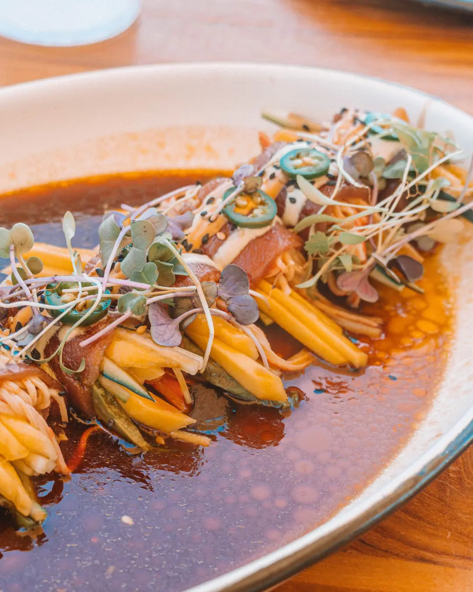
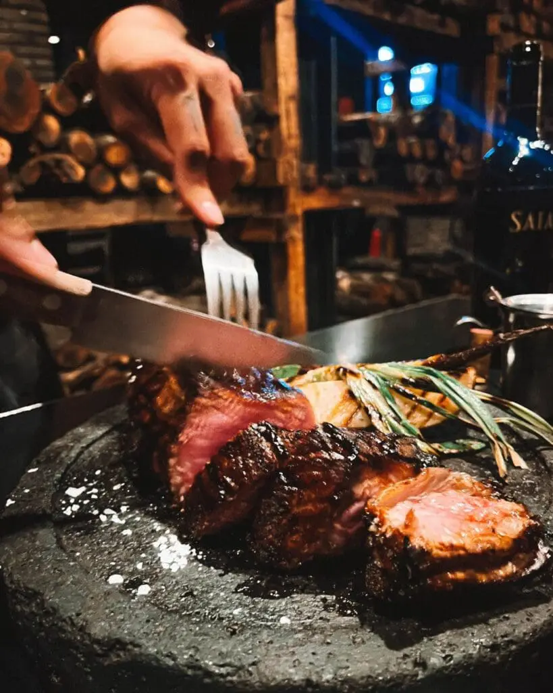

3 best restaurants in San Jose del Cabo, Mexico
This list of the best restaurants in San Jose del Cabo is a collection of my honest reviews and personal experiences, which I have accumulated since living here in 2021. It took me many months to compile it, and I am happy to share this with you!
Welcome to my home, food lovers! While often overshadowed by its party-centric neighbor, Cabo San Lucas, San Jose del Cabo has emerged as a culinary hotspot, offering an eclectic mix of traditional and innovative flavors.
In this enchanting oasis, you’ll find a vibrant restaurant scene that showcases the best of Baja California’s culinary heritage while also celebrating international influences from around the globe.
From hidden taco stands and bustling seafood markets to elegant fine dining establishments and trendy farm-to-table eateries, San Jose del Cabo provides a delightful gastronomic experience for every kind of food enthusiast. Join me as I embark on an epicurean adventure, exploring the must-try dishes, local ingredients, and culinary talents that make San José del Cabo’s food scene so extraordinary. I am based in Los Cabos so the San Jose del Cabo restaurants in this list are 100% local. I also visited these restaurants personally and included a few you won’t find in other lists! If you come this way and want to hang out, I’d be happy to take you around these restaurants!
1. Aguamala: best raw seafood restaurant in San Jose del Cabo
Aguamala is one of the best seafood restaurants in San Jose del Cabo. It is particularly popular because of its spot at the iconic colorful street of San Jose (next to Jazmin’s).

This is where you’ll ideally go for day drinking as they have small seafood plates for snacking. Aguamala is well-known for its raw food and here, you will get to taste fresh ceviche, aguachile, and other seafood delights from Baja California Sur.
During the oyster season, you must order their oyster platter ($50 USD). It is enough for sharing, and each of the oysters in the platter comes from the different seas of the Baja (Sea of Cortez, Pacific Coast, Punta Lobos). Some of the oysters even come fresh from Loreto daily!
2. Señor Pez: best restaurant by the beach in San Jose del Cabo
I discovered this restaurant by accidentally turning right to a dry stream in the Tourist Corridor. I saw a food truck by the beach and walked towards it. I was surprised to see that it was actually a restaurant with tables and chairs facing the beach! From then on, I always spent the weekends here because the beach is always empty, and I love dining by the ocean!
Pez translates to “fish” in English so expect seafood dishes here. They serve traditional Mexican seafood plates like tostadas, tacos, aguachiles, ceviches, and more! Compared to other beach clubs in Cabo, the prices here are cheaper, plus you have the beach to yourself! During the oyster season, you must order their oyster platter ($50 USD). It is enough for sharing, and each of the oysters in the platter comes from the different seas of the Baja (Sea of Cortez, Pacific Coast, Punta Lobos). Some of the oysters even come fresh from Loreto daily!
3. Carbon Cabron: best steak restaurant in San Jose del Cabo
Carbon Carbon by renowned Chef Poncho Bravo is an upper-class dining style in San Jose del Cabo. The menu is small so you won’t get overwhelmed with what to order. And you come to Carbon Cabron for one thing: the steaks.
Not Argentine, not Texan, but you know, just Poncho Bravo style kind of heavy char cooking. The restaurant’s ambiance is dark but the fires from the grill illuminate the area. This is an open kitchen setting and you can always watch the kitchen action from your table.
The service is very personalized, and the waiters are highly-trained and educated about wine and steaks. It’s quite rare to encounter servers in Mexico who actually knows the food they are serving so this was a plus for Carbon Cabron. Prices at Carbon Cabron are slightly higher than those at other San Jose del Cabo restaurants. A meal for two with steak, a vegetable side, and a decent bottle of wine can cost up to $300 USD



Georgia Reader Reply
I love Trisha Velarmino's food recommendations! I tried La Lupita Taco & Mezcal, and the tacos were out of this world!